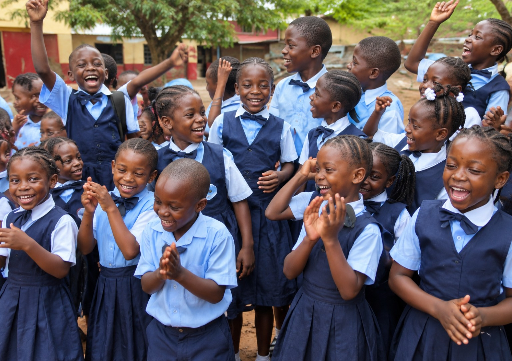

Educational Assistance
Support for school-related expenses and other identified educational needs.
Our flagship programs and strategic initiatives
Transforming Lives Through Education, Opportunity, and Empowerment.
1. Flagship initiative
2,000 Children, One Greater Future is the flagship educational intervention of ImpactReach Foundation (IRF), established to expand educational opportunities for vulnerable and disadvantaged children across Liberia.
The initiative seeks to identify, support, and empower 2,000 children whose educational advancement is constrained by poverty, limited household resources, and other socioeconomic barriers.
At ImpactReach Foundation, we believe that every child deserves an opportunity to learn, develop their potential, and contribute meaningfully to society, regardless of their family’s financial circumstances.
Through this initiative, IRF seeks to mobilize resources and establish strategic partnerships with government institutions, private-sector organizations, businesses, churches, philanthropic foundations, development partners, and individuals committed to advancing education and human development.

Sponsorship and resource mobilization framework
The initial US$30 sponsorship contribution represents an entry-level commitment toward supporting a child’s educational needs. The specific assistance provided will be determined through beneficiary assessments, available resources, and approved program support packages.
IRF welcomes individuals, organizations, institutions, and corporate partners to participate through direct sponsorships, financial contributions, in-kind donations, and institutional partnerships.
Program objectives
Expand access to educational assistance for vulnerable children.
Reduce financial barriers that prevent children from accessing educational opportunities.
Improve access to essential learning materials and educational resources.
Promote academic development through mentorship and educational guidance.
Connect deserving children to additional scholarship and educational opportunities.
Encourage corporate, institutional, and individual investment in children’s education.
Areas of intervention
Support for school-related expenses and other identified educational needs.
Provision of books, notebooks, stationery, and essential educational supplies.
Assistance to disadvantaged households facing difficulties sustaining their children’s education.
Connecting qualified and deserving students to additional educational funding opportunities.
Promoting academic encouragement, personal development, and responsible citizenship.
Connecting children with appropriate institutions and organizations offering specialized educational assistance.
Implementation and accountability framework
To ensure transparency, credibility, and measurable results, IRF will implement the initiative through a structured beneficiary management and monitoring framework. The implementation process will include:
Community-based identification of vulnerable and disadvantaged children.
Development and application of transparent beneficiary selection criteria.
Verification of household and educational circumstances.
Registration and documentation of approved beneficiaries.
Mobilization of sponsors and institutional resources.
Coordination and delivery of approved educational assistance.
Continuous monitoring of beneficiary participation and progress.
Periodic program reviews, financial accountability, and impact reporting.
Expected results
Our CommitmentEvery child deserves an opportunity to learn. Together, we can create a future in which financial hardship does not determine a child’s educational destiny.
2. Long-term national educational initiative
A Five-Year Commitment to Educational Transformation (2026–2031)
ImpactReach Foundation envisions a Liberia where children and young people have equitable opportunities to access quality education, develop relevant skills, pursue higher education, and participate meaningfully in national development.
Building on the flagship 2,000 Children, One Greater Future initiative, IRF is advancing a broader national commitment to reach at least 10,000 children and young people across Liberia by 2031.
This five-year initiative is designed to extend beyond immediate educational assistance by creating sustainable pathways for academic advancement, technical and vocational training, professional development, mentorship, entrepreneurship, and economic empowerment.
Through strategic partnerships with relevant government ministries and agencies, educational institutions, development organizations, private-sector actors, and international partners, IRF seeks to contribute to Liberia’s human capital development agenda.
Promoting educational opportunities for vulnerable and disadvantaged children by supporting school participation, learning resources, educational assistance, and interventions that encourage continued engagement in education.
Facilitating access to local and international scholarship opportunities, university admissions information, academic guidance, and other pathways for deserving students to pursue higher education.
Connecting young people to vocational education, technical training, digital skills, entrepreneurship development, and career-oriented learning opportunities that respond to emerging employment needs.
Establishing mentorship opportunities that connect children and young people with educators, professionals, entrepreneurs, public servants, and responsible community leaders.
Facilitating pathways toward internships, entrepreneurship, professional development, employment opportunities, and other initiatives that promote economic independence and productive participation in society.
Five-year implementation and expansion framework
IRF proposes a phased implementation approach with the following cumulative beneficiary targets.
These figures represent proposed cumulative planning targets. Actual implementation will depend on available funding, institutional partnerships, operational capacity, and annual performance reviews.
IRF will maintain a consistent beneficiary registration and monitoring system to ensure accurate reporting and prevent double-counting.
| Implementation period | Cumulative target |
|---|---|
| 2026 | 2,000 |
| 2027 | 4,000 |
| 2028 | 6,000 |
| 2029 | 8,000 |
| 2030–2031 | 10,000 |
| Total target by 2031 | 10,000 |
Strategic partnership and collaboration
Achieving this national ambition requires collective action and coordinated institutional support. IRF seeks to establish partnerships with:
Expected long-term impact
Our Vision for the FutureWe are not simply supporting children through school; we are investing in the next generation of educated, skilled, responsible, and productive Liberians.
3. Scholarship and international educational opportunities program
ImpactReach Foundation recognizes that many academically capable and motivated Liberian students face significant financial and informational barriers when pursuing higher education and professional development.
The Scholarship and International Educational Opportunities Program seeks to bridge this gap by connecting deserving students, particularly those from vulnerable and disadvantaged backgrounds, to verified educational opportunities within Liberia and internationally.
Through strategic collaboration with universities, colleges, scholarship foundations, international educational institutions, embassies, development partners, and other relevant organizations, IRF seeks to expand access to academic advancement and professional training.
Program objectives
Increase awareness of local and international scholarship opportunities.
Facilitate access to undergraduate and postgraduate educational opportunities.
Support deserving students in identifying suitable academic programs and institutions.
Strengthen relationships with local and international universities and scholarship providers.
Promote access to technical, vocational, and professional training.
Encourage educational exchange, academic collaboration, and international learning opportunities.
Key program activities
Identifying and sharing verified scholarship opportunities offered by universities, governments, foundations, international organizations, and educational institutions.
Establishing a database of qualified and deserving Liberian students seeking scholarships and other educational advancement opportunities.
Providing appropriate guidance on scholarship applications, admission requirements, supporting documentation, and application procedures.
Building relationships with local and international universities, colleges, training institutions, and scholarship organizations to explore opportunities for Liberian students.
Facilitating access to information about international study programs, academic exchanges, fellowships, and other legitimate educational opportunities.
Connecting young people to professional certification, vocational training, digital learning, and specialized career development programs.
Priority beneficiaries
Partnership opportunities
Expected outcomes
Our CommitmentTalent should never be wasted because opportunity is inaccessible. Through partnerships and educational advocacy, IRF seeks to help deserving Liberian students connect their academic potential with opportunities that can transform their lives.
4. Our approach to implementation, partnerships, and accountability
ImpactReach Foundation believes that sustainable development requires more than good intentions. It requires effective planning, institutional collaboration, responsible resource management, measurable outcomes, and transparent reporting.
Accordingly, our educational initiatives will be guided by the following principles:
Working with relevant government ministries, agencies, educational institutions, development partners, and community stakeholders.
Maintaining appropriate financial records, beneficiary documentation, program reports, and accountability mechanisms.
Prioritizing vulnerable and disadvantaged populations while promoting fair and transparent access to program opportunities.
Using beneficiary assessments, documented needs, monitoring systems, and periodic program evaluations to guide implementation.
Developing programs that can grow through partnerships, resource mobilization, institutional support, and measurable performance.
Measuring progress through clearly defined targets, outputs, outcomes, and impact indicators.
Children come before publicity
Children’s names, images, and personal experiences should only be shared with appropriate permission and a clear commitment to their wellbeing.
This page will use verified information and respectful imagery as the initiatives develop.
5. Partner with us
The transformation of Liberia’s educational and human development landscape requires collective commitment.
ImpactReach Foundation invites government ministries and agencies, private-sector institutions, international development partners, universities, philanthropic organizations, churches, and individuals to join us in advancing these initiatives.
Whether through financial contributions, institutional collaboration, technical expertise, or direct educational opportunities, every partnership can contribute to building a stronger future for Liberia’s children and young people.
ImpactReach Foundation (IRF) · Reaching Life. Transforming Future.
Our flagship initiative: 2,000 Children, One Greater Future.
Our national ambition: 10,000 Children, One Greater Future by 2031.